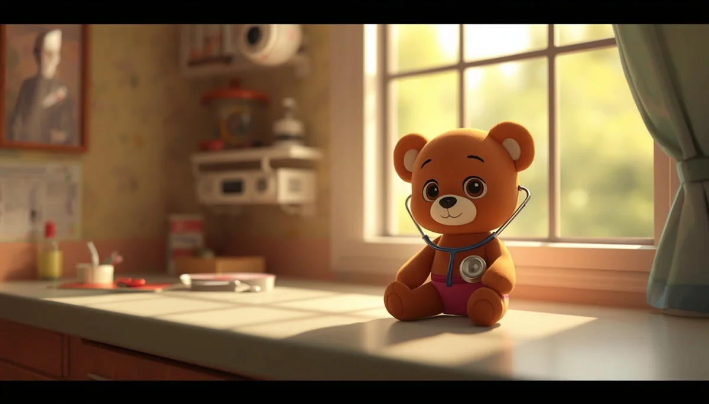

Soporte Vital Básico y Reanimación Pediátrica (RCP)
Tercera parte de la guía de urgencias: comprobación de consciencia, apertura de vía aérea, ventilaciones de rescate y compresiones torácicas adaptadas a lactantes y niños.

Índice Detallado de la Tercera Parte
Contenidos de soporte vital básico:
1. Evaluación inicial de la consciencia y la respiración
Si un niño sufre un atragantamiento total, un ahogamiento o un desmayo repentino y pierde la consciencia, el tiempo de actuación determina por completo las probabilidades de supervivencia y la ausencia de secuelas neurológicas. No hay que dejarse vencer por el pánico: el protocolo internacional de soporte vital básico proporciona una guía clara y metódica.
Pasos de evaluación inmediata:
- • Comprobar consciencia: Estimular al niño con suavidad sacudiéndole los hombros (en niños mayores) o golpeando las plantas de los pies (en lactantes), hablándole en voz alta y clara ("¿Te encuentras bien?"). Si no responde ni emite ningún sonido o movimiento, se considera inconsciente.
- • Pedir ayuda / Activar el 112: Si hay más personas presentes, encarga a alguien que llame inmediatamente al 112 y busque un desfibrilador (DEA). Si estás totalmente solo con el menor, debes realizar 2 minutos completos de RCP efectiva antes de dejar al niño para llamar por teléfono a emergencias.
- • Comprobar respiración: Colocar al niño boca arriba sobre una superficie firme y plana. Abrir la vía aérea y comprobar la respiración durante un máximo de 10 segundos utilizando la técnica VES: Ver si el pecho se eleva, Oír la salida de aire y Sentir el aliento en tu mejilla. Una respiración agónica, jadeante o ausente significa que no respira de forma eficaz y exige iniciar RCP de inmediato.
2. Apertura de la vía aérea y ventilaciones de rescate iniciales
A diferencia de los adultos, en los niños la causa principal de parada cardiorrespiratoria suele ser la falta de oxígeno (asfixia por ahogamiento, atragantamiento o infecciones respiratorias graves). Por ello, las ventilaciones de rescate son absolutamente prioritarias antes de iniciar las compresiones.
- • Maniobra frente-mentón: Colocar una mano en la frente del niño inclinando suavemente la cabeza hacia atrás, y con los dedos de la otra mano levantar el mentón para despejar la vía aérea. En lactantes, la posición debe ser neutra (no hiperextender en exceso el cuello para no bloquear el conducto traqueal).
- • Las 5 ventilaciones de rescate iniciales: Tras abrir la vía aérea, administrar 5 respiraciones de rescate boca a boca (en niños mayores cubriendo boca y nariz o solo boca según tamaño) o boca-boca/naríz (abarcando simultáneamente la boca y la nariz del lactante con tus labios). Suministra insuflaciones suaves y constantes, observando que el tórax del menor se eleve claramente con cada soplido, igual que cuando bosteza de forma natural.
3. Reanimación Cardiopulmonar (RCP) en lactantes (menores de 1 año)
Si tras las 5 ventilaciones iniciales el lactante sigue sin reaccionar, no se mueve, no tose ni respira, el corazón se ha detenido o está a punto de hacerlo. Se debe iniciar el ciclo continuo de compresiones torácicas combinadas con ventilaciones.
- • Relación de compresiones y ventilaciones: El ciclo estándar de RCP pediátrica con un único socorrista es de 15 compresiones torácicas seguidas de 2 ventilaciones de rescate (ritmo 15:2).
- • Técnica de compresión en lactantes: Colocar dos dedos (índice y corazón) en el centro del esternón, justo un dedo por debajo de la línea intermamilar. Comprimir el tórax de forma rítmica y vertical hundiéndolo aproximadamente un tercio de su diámetro anteroposterior (unos 4 centímetros). Mantener una frecuencia rápida y constante de unas 100 a 120 compresiones por minuto (puedes guiarte mentalmente por el ritmo de la canción).
- • Continuidad: Realiza bloques constantes de 15 compresiones y 2 ventilaciones sin detenerte, salvo para comprobar si el bebé recupera signos de vida espontáneos o hasta la llegada de los servicios de emergencia sanitaria.
4. Reanimación Cardiopulmonar (RCP) en niños mayores de 1 año
Para los niños que han superado el año de edad y hasta la pubertad, la técnica de compresión se adapta a su complexión física para garantizar la profundidad necesaria sobre el músculo cardíaco.
- • Relación de compresiones y ventilaciones: Se mantiene el mismo estándar de emergencia de 15 compresiones y 2 ventilaciones (ritmo 15:2).
- • Técnica de compresión en niños mayores: Utilizar el talón de una sola mano (o ambas entrelazadas si el niño es más grande o robusto) colocada sobre la mitad inferior del esternón. Mantener los brazos completamente estirados y los hombros alineados verticalmente por encima del pecho del menor. Comprimir el tórax hundiéndolo un tercio de su profundidad (aproximadamente 5 centímetros) a un ritmo constante de 100 a 120 compresiones por minuto.
- • Uso de Desfibrilador (DEA): Si se dispone de un desfibrilador externo automático en el lugar del accidente, utilízalo de inmediato aplicando los parches pediátricos específicos (o los de adultos situando uno en el pecho y otro en la espalda si no hay pediátricos disponibles) siguiendo las instrucciones de voz automatizadas del aparato.
Constancia: La RCP puede resultar físicamente agotadora, pero mantener un ritmo firme y continuo es lo único que mantiene la perfusión de oxígeno hacia el cerebro del niño mientras llega asistencia médica avanzada.